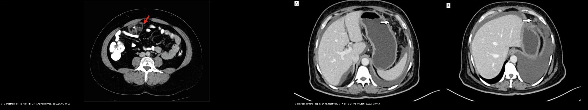
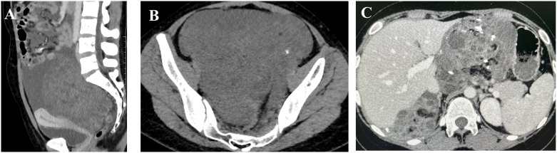
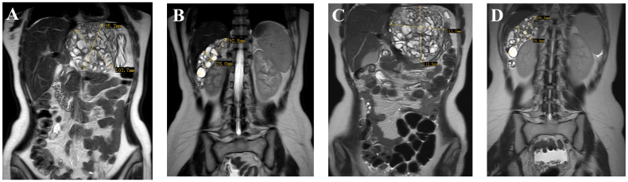
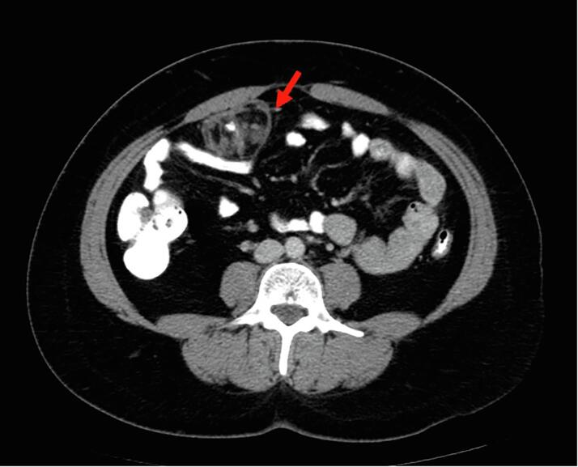
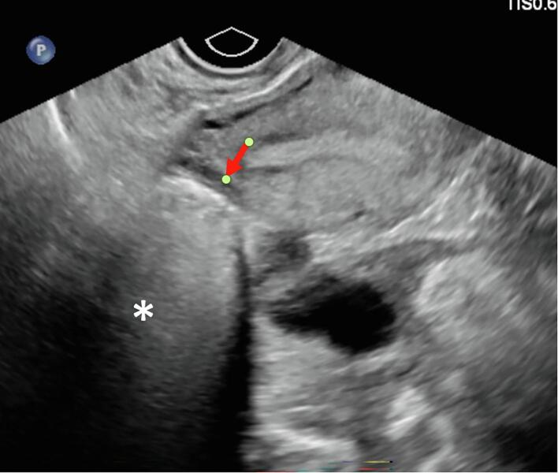
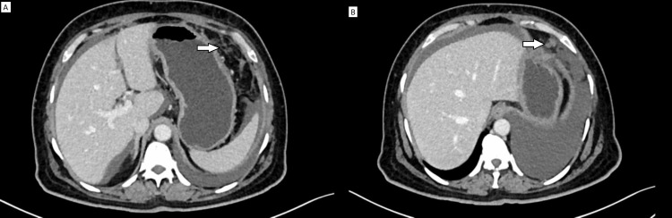
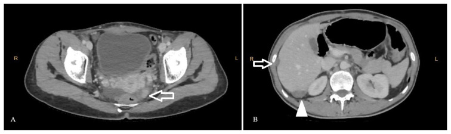
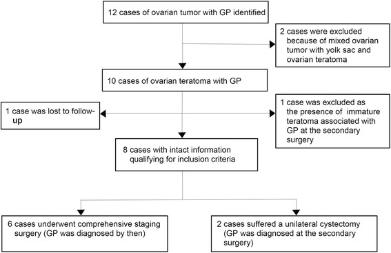

538 — Hội chứng u quái "mọc" (growing teratoma syndrome) & gliomatosis peritonei / Growing teratoma syndrome & gliomatosis peritonei
Tags: pattern:u-buong-trung pattern:u-quai pattern:gieo-rac-phuc-mac vung:buong-trung vung:phuc-mac score:FIGO protocol:CT-bung-chau protocol:MRI-chau protocol:AFP-bHCG-LDH
Mức chắc chắn (certainty): tổng hợp y văn (literature synthesis) — nhóm tự biên từ y văn mở (Europe PMC/PMC: Front Oncol, Gynecol Oncol Rep, Turk J Med Sci, J Ovarian Res, Cureus, Curr Oncol) + các ca minh họa có giấy phép; không phải ca nguyên văn đơn lẻ.
1. Tổng quan — "khối to lên MÀ chỉ có mô trưởng thành": nghịch lý của u quái sau hóa trị + cơ chế hình ảnh
- Hội chứng u quái "mọc" (growing teratoma syndrome — GTS): định nghĩa Logothetis 1982 gồm 3 tiêu chuẩn bắt buộc (thiếu 1 tiêu chuẩn là không phải GTS):
- Khối phúc mạc/ổ bụng TO LÊN trong hoặc sau hóa trị u tế bào mầm (germ cell tumor);
- Dấu ấn huyết thanh trước đây tăng nay về bình thường (AFP, β-hCG, LDH); nếu còn tăng → nghĩ u non tái phát thật, không phải GTS;
- Mô bệnh của khối cắt ra CHỈ có u quái trưởng thành (mature teratoma), không có thành phần mầm non ác.
- Dịch tễ (định lượng): ở u tế bào mầm không tinh hoàn (non-seminomatous germ cell tumor — NSGCT) tinh hoàn, GTS gặp 1,9–7,6%; ở buồng trứng hiếm hơn, một số báo cáo ~12%; con số dao động mạnh vì tiêu chuẩn chẩn đoán khác nhau. Thường xuất hiện < 2 năm sau hóa trị.
- Sinh lý bệnh — vì sao KHÔNG phải "tái phát": hóa trị (BEP) diệt thành phần mầm NON (rất nhạy), nhưng thành phần u quái trưởng thành kháng trị tiếp tục lớn dần (bơm nhầy/nang, mô thần kinh–sụn–xương) → khối to lên dù dấu ấn bình thường. Nói cách khác đây là "thất bại về mặt mô học" của hóa trị: tế bào ác bị giết nhưng xác mô trưởng thành còn lại và phát triển.
- TẠI SAO hình ảnh trông "đặc như u ác" mà vẫn lành: mô quái trưởng thành chứa mỡ (CT −40 đến −120 HU, T1 sáng mất tín hiệu khi fat-sat), vôi hóa (CT > 100 HU, có thể thô/lấm tấm), nang dịch và mô thần kinh–sụn (T2 trung gian). Chính các thành phần "quái" (mỡ + vôi + nang + xơ) chồng lên nhau tạo hình "hỗn hợp đặc–nang" dễ nhầm khối u hoạt động.
- Nguy cơ tiềm tàng: thoái triển ác phần mô đệm (somatic malignant transformation) — u quái trưởng thành chuyển thành sarcoma/xuất vảy/adeno — gặp 3–5,4%, tiên lượng xấu → vẫn phải mổ lấy toàn bộ, không "để yên" vì nghĩ lành.
- Kết quả sau mổ (định lượng): cắt R0 → sống 5 năm 89–90%, tái phát sau cắt trọn 0–4%; cắt không hoàn toàn → tái phát 72–83% — chính vì thế GTS là bài toán phẫu thuật, không phải hóa trị.
- Gliomatosis peritonei (GP): mảnh ghép mô đệm thần kinh TRƯỞNG THÀNH (mature glial tissue) rải trên phúc mạc, mạc nối, hạch bạch huyết; WHO xếp độ 0 (grade 0) trong thang u quái buồng trứng non (Norris). Cơ chế: gieo rác qua vết rách vỏ u/vỡ khối vào ổ bụng hoặc lan theo bạch mạch (đã chứng minh tổ chức glial trong hạch chậu–cạnh ĐMC). GP hiếm khi đơn độc, thường đi kèm u quái non (và có thể đồng thời với GTS).
- Vì sao GP lành dù "gieo rác khắp phúc mạc": tổ chức đệm trưởng thành không xâm lấn phá hủy và không di căn tiếp → KHÔNG cần hóa trị, theo dõi dài (nhiều ca ổn định/không tiến triển nhiều năm). Ngược lại, mô đệm NON (immature glia) trong ổ gieo rắc mới là u non thật, phải hóa trị.
- Vì sao cực quan trọng trên lâm sàng: GTS/GP hay bị đọc nhầm là "tiến triển – tái phát" → bệnh nhân bị cho thêm hóa trị (vô ích, độc) trong khi điều trị đúng là MỔ. Ghi nhớ câu chốt: khối to lên + dấu ấn BÌNH THƯỜNG = nghĩ GTS/GP, đừng hóa trị thêm.
2. Mẫu hình + chẩn đoán phân biệt theo vị trí (Gamut)
- Khuôn 1 — Khối phúc mạc/ổ bụng tăng kích thước sau hóa trị, dấu ấn bình thường: GTS (u quái trưởng thành). Tổn thương giàu mỡ ± vôi ± nang, có thể nhiều ổ (lan tới hạch sau phúc mạc, gan rốn, mạc nối, thậm chí ngoài ổ bụng).
- Khuôn 2 — Nốt/dep nhỏ rải rác mạc nối–mạc treo–mặt gan–hạch, dấu ấn bình thường: GP (mô đệm trưởng thành). Hình ảnh nhẹ nhàng: dep nhỏ, mảnh xơ hóa mỡ mạc treo (fat stranding), nốt lấm tấm — không tạo khối lớn đặc xâm lấn.
- Khuôn 3 — GP "thành khối" hoặc gây hiệu ứng: ổ gieo rắc dày đặc có thể giả bánh mạc nối/carcinomatosis; thỉnh thoảng nang/dep tạo khối đẩy tắc ruột (dù lành) → vẫn phải mổ giải ép.
- Khuôn 4 — GTS + GP đồng thời: khối mỡ–vôi lớn (GTS) cộng dep glial rải rác (GP) — ca hiếm, ghi nhận ~20 trường hợp trong y văn.
- Khuôn 5 — Khối to lên + dấu ấn TĂNG: KHÔNG phải GTS — nghĩ u non tái phát thật / u quái non → hóa trị ± mổ.
- Gamut theo dấu ấn (bộ lọc đầu tiên): dấu ấn bình thường + khối to → GTS/GP; dấu ấn tăng → tái phát u non; dấu ấn tăng nhưng khối chỉ mỡ/vôi → cẩn thận u quái non còn sót/thoái triển ác.
- Mimic cần loại: u quái non tái phát (kích thước, dấu ấn, mô học immature), thoái triển ác mô đệm (sarcoma/carcinoma) (thành phần đặc ngấm mạnh, ác tính trên mô học), carcinomatosis phúc mạc (báng lớn + bánh mạc nối +
535/539), LPD – bệnh sinh bạch mạc lành sau morcellation (518), u quái trưởng thành nguyên phát mới.
3. Bảng so sánh phân biệt (ma trận đối chiếu)
| Thực thể (entity) | Hình ảnh điển hình (US/CT/MRI) | Chốt vào (rule-in) | Chốt loại (rule-out) | Gợi ý xác nhận |
|---|---|---|---|---|
| GTS (u quái "mọc") | Khối mỡ ± vôi ± nang ở ổ bụng/hạch, TO LÊN so với phim trước, có thể đặc–nang hỗn hợp | Khối giàu mỡ to lên sau hóa trị + AFP/β-hCG BÌNH THƯỜNG | Dấu ấn TĂNG → u non tái phát, không phải GTS | CT/MRI bụng–chậu + dấu ấn theo mốc; khẳng định bằng mô bệnh trưởng thành |
| Gliomatosis peritonei | Dep/nốt nhỏ mạc nối–mạc treo–mặt gan, mảnh xơ mỡ; hiếm khi thành khối | Dep glial nhỏ + tiền sử u quái + dấu ấn bình thường | Dep đặc lớn ngấm mạnh + báng nhiều → carcinomatosis/535 |
Sinh thiết/sinh thiết cắt trọn: mô đệm trưởng thành (grade 0) |
| U quái non tái phát (thật) | Khối đặc–nang hỗn hợp, thành phần non ngấm, có thể di căn | Dấu ấn AFP/β-hCG TĂNG trở lại + thành phần non trên mô học | Mô học thuần trưởng thành + dấu ấn bình thường → GTS/GP | Mô bệnh (immature neuroepithelium); AFP/hCG |
| Thoái triển ác mô đệm (sarcoma/carcinoma) | Thành phần đặc ngấm mạnh, xâm lấn, có thể ác tính thứ phát | Phần mô đệm đặc ngấm, mô học ác tính (sarcoma/SCC/adeno) | Khối thuần trưởng thành không ngấm → GTS lành | Mô bệnh + hóa mô miễn dịch; tiên lượng xấu |
Carcinomatosis phúc mạc (535/539) |
Báng lớn + bánh mạc nối + "khía" gan–lách, nốt đặc | Báng nhiều + bánh mạc nối + ngấm mạnh | Dep nhỏ rải rác, dấu ấn bình thường → GP | Mô bệnh/tế bào học; CA-125 |
U quái trưởng thành buồng trứng (530) |
Nang mỡ + vôi + nốt Rokitansky, một khối, từ đầu đã có | Mỡ + vôi + tóc/nốt Rokitansky từ đầu | Có tiền sử u mầm + khối to lên sau hóa trị → GTS/GP | US/CT đặc trưng; bóc khi to/xoắn |

Trái: GTS — khối giàu mỡ + vôi (mũi tên đỏ) ở ổ bụng sau hóa trị, dấu ấn bình thường. Phải: gliomatosis peritonei — dep/dải xơ mỡ ở mạc nối – mạc treo (mũi tên trắng), không tạo khối đặc xâm lấn. Nguồn: File B et al., Gynecol Oncol Rep 2025 & Patel T & Meena V, Cureus 2022, CC BY 4.0 (ảnh ghép letterbox).Dấu hiệu "chốt" hay bị bỏ sót
- So phim cũ là bắt buộc: GTS chỉ lộ ra khi đặt cạnh phim trước hóa trị — nhìn 1 phim đơn độc rất dễ gọi "tái phát".
- Đối chiếu dấu ấn theo mốc thời gian: đường cong AFP/β-hCG giảm dần về bình thường rồi ĐI NGANG trong khi khối to lên = GTS; đường cong tăng trở lại = tái phát u non.
- Tìm mỡ + vôi trong "khối tái phát": thành phần quái (mỡ CT âm, vôi > 100 HU) gợi GTS hơn là u non.
4. Protocol chụp + phân giai đoạn FIGO + quyết định mổ (flowchart)
- Đánh giá ban đầu u tế bào mầm buồng trứng: siêu âm đầu tay (mô tả mỡ/vôi/nang) → CT ngực–bụng–chậu có cản quang để phân giai đoạn (FIGO 2014 cho ung thư buồng trứng, dùng chung
536) + dấu ấn AFP, β-hCG, LDH trước và sau mỗi đợt. - Theo dõi sau hóa trị (điểm mấu chốt): CT bụng–chậu (± ngực) mỗi 3–6 tháng trong 2 năm đầu, sau đó thưa dần; đo kích thước tổn thương và so với phim nền. Bất kỳ khối mới/to lên đều phải đối chiếu dấu ấn trước khi quyết định "tiến triển".
- Dấu ấn huyết thanh hỗ trợ:
- AFP (u xoang nội bì/yolk sac, u quái non) — thời gian bán hủy ~5–7 ngày;
- β-hCG (u nguyên bào nuôi/choriocarcinoma, dysgerminoma) — bán hủy ~24–36 giờ;
- LDH (dysgerminoma) — bán hủy ~2–3 ngày.
- Đường cong giảm đúng chu kỳ bán hủy rồi đi ngang + khối to = GTS. Đường cong chững lại rồi tăng = tái phát thật.
- Chẩn đoán hình ảnh + mô học: nghi GTS/GP → mổ bóc/đánh giá mô học (đây là "chẩn đoán mổ"): lấy tối đa tổn thương để (a) loại thành phần NON, (b) tìm thoái triển ác mô đệm; lấy mẫu rộng + nhiều điểm vì tổn thương hỗn hợp dễ bỏ sót phần non.
- Nguyên tắc xử trí: GTS → cắt trọn R0 (bảo tồn sinh sản khi có thể), KHÔNG hóa trị thêm; cắt sớm khi khối còn nhỏ để tránh biến chứng cơ học/tắc ruột; theo dõi dài vì có thể xuất hiện khối mới. GP → phần lớn theo dõi (grade 0, lành), mổ khi gây biến chứng/tắc; hạch có mô glial cũng lành, không cần hóa trị.
flowchart TD
A[U te bao mam buong trung da hoa tri] --> B{Khoi moi/to len tren CT-MRI?}
B -->|Khong| Z[Tiep tuc theo doi 3-6 thang/2 nam dau]
B -->|Co| C{AFP / beta-hCG the nao?}
C -->|BINH THUONG| D{Nhin lai: co MO + VOI + nang?}
C -->|TANG tro lai| E[U non tai phat THAT: hoa tri +/- mo]
D -->|Co mo-vooi, khoi lon| F[GTS: MO cat R0, KHONG hoa tri them]
D -->|Dep nho rai rac mac noi/mac treo| G[Gliomatosis peritonei: theo doi, mo neu tac/ bien chung]
F --> H{Mo hoc con thanh phan NON?}
H -->|Khong, thuan truong thanh| I[Chan doan xac nhan GTS: theo doi dai]
H -->|Co -> nghi thoa trien ac mo dem| J[Sarcoma/carcinoma: xu tri theo mo hoc]
G --> K[Sinh thiet/mo: mo dem TRUONG THANH = grade 0]
5. Biến thể bình thường và cạm bẫy
- Cạm bẫy số 1 — gọi "tiến triển/tái phát" rồi cho hóa trị thêm: đây là lỗi điển hình của GTS. Ghi nhớ: khối to + dấu ấn bình thường = GTS/GP → MỔ, không hóa trị.
- Cạm bẫy "dấu ấn bình thường mà vẫn loại trừ ác": GTS có thể kèm thoái triển ác mô đệm (3–5,4%); phần mô đệm đặc ngấm mạnh/xâm lấn cần mô học, không loại trừ chỉ vì dấu ấn bình thường.
- Cạm bẫy gieo rắc glial trong hạch: hạch chậu–cạnh ĐMC chứa mô glial trưởng thành không phải di căn ác và không cần hóa trị — đừng nâng giai đoạn rồi điều trị quá mức.
- Cạm bẫy mô học "một chỗ trưởng thành": GP/GTS là tổn thương nhiều ổ; lấy 1 mẫu thấy mô trưởng thành không đủ loại thành phần non ở chỗ khác → lấy nhiều mẫu/đa điểm.
- Cạm bẫy "thỏa mãn tìm kiếm": thấy khối GTS lớn rồi bỏ sót GP rải rác (hoặc ngược lại) — luôn quét đủ mạc nối/mạc treo/mặt gan/hạch.
- Cạm bẫy phẫu thuật: cắt không trọn (R2) làm tái phát vọt lên 72–83% → luôn nhắm R0, mổ sớm khi khối còn nhỏ, tránh biến chứng tắc ruột/chèn ép.
- Follow-up ngắn hạn: GTS/GP có thể xuất hiện muộn và GP có thể ổn định nhiều năm — đừng xuống thang theo dõi quá sớm.
6. Tự lượng giá — Blind Quiz
Ca 1 — Nữ trẻ đã điều trị u quái buồng trứng non bằng hóa trị BEP, dấu ấn về bình thường, nay CT thấy khối ổ bụng lớn hơn. Đọc CT so sánh.

- Gợi ý lâm sàng (clinical context): đã hết hóa trị, AFP/β-hCG bình thường, khối ổ bụng to lên.
- Câu hỏi: Dấu hiệu chính? Đây là tái phát hay hội chứng khác? Xử trí?
Bấm để hiện đáp án (findings + chẩn đoán)
- Dấu hiệu (findings): (A, B) khối đặc–nang lớn chiếm ổ bụng–chậu với vôi hóa lấm tấm; (C) sau hóa trị khối vẫn lớn nhưng nay chứa mỡ đại thể + vôi (mature teratoma) → TO LÊN so với phim trước.
- Chẩn đoán (diagnosis): hội chứng u quái "mọc" (GTS) — khối to lên sau hóa trị mà dấu ấn bình thường và mô học chỉ có thành phần trưởng thành; điều trị là MỔ cắt trọn R0, không hóa trị thêm (cắt trọn → tái phát 0–4%, không trọn → 72–83%).
- Nguồn ảnh: Tao J et al., Front Oncol 2024, Fig. 1, CC BY 4.0.
Ca 2 — Cùng bệnh cảnh, MRI bụng coronal. Đọc MRI.

- Hỏi: các khối ở đâu? Thành phần nào gợi bản chất lành? Có nên hóa trị thêm?
Bấm để hiện đáp án (findings + chẩn đoán)
- Dấu hiệu (findings): nhiều khối ở khoang quanh gan–dạ dày và chậu hông, kích thước lớn dần theo thời gian (2023-07-19 → 2023-09-24), tín hiệu MỠ (sáng T1, mất khi fat-sat) + nang; tổn thương lan nhiều khoang.
- Chẩn đoán (diagnosis): GTS lan rộng (nhiều ổ) — thành phần mỡ trưởng thành + to lên sau hóa trị = lành về mô học; KHÔNG hóa trị thêm, cần mổ bóc trọn và theo dõi dài.
- Nguồn ảnh: Tao J et al., Front Oncol 2024, Fig. 3, CC BY 4.0.
Ca 3 — Khối mỡ nhỏ ở mạc treo sau 7 tháng hết hóa trị. Đọc CT.

- Hỏi: thành phần nào trong khối? Vì sao cần mổ dù "chỉ mỡ"?
Bấm để hiện đáp án (findings + chẩn đoán)
- Dấu hiệu (findings): khối ~5 cm chủ yếu mỡ + một vôi hóa (mũi tên đỏ), xuất hiện 10 tháng sau mổ u quái non và 7 tháng sau hết hóa trị, trong khi AFP 2,7 ng/mL, LDH 160 U/L, CA-125 bình thường.
- Chẩn đoán (diagnosis): GTS (mature teratoma) — mổ bóc khối (kích thước bệnh phẩm 5 × 4 × 3,5 cm); mô học chỉ mô trưởng thành. Mổ cần thiết để (a) loại thành phần non, (b) phòng biến chứng cơ học, (c) loại thoái triển ác.
- Nguồn ảnh: File B et al., Gynecol Oncol Rep 2025, Fig. 2A-B, CC BY 4.0.
Ca 4 — Siêu âm cùng ca 3. Đọc siêu âm.

- Hỏi: khối tăng hồi âm + suy giảm sau gợi chất gì bên trong? Có phải "khối đặc ác"?
Bấm để hiện đáp án (findings + chẩn đoán)
- Dấu hiệu (findings): khối tăng hồi âm (hyperechoic) với suy giảm âm phía sau (posterior attenuation) — gợi mỡ + mô quái; không phải tổ chức đặc ác đồng nhất.
- Chẩn đoán (diagnosis): GTS (mature teratoma) — siêu âm chỉ gợi bản chất quái (mỡ/vôi), không chốt lành–ác; cần CT/MRI + dấu ấn + mô học. Kẻo gọi nhầm "khối đặc ác" rồi hóa trị.
- Nguồn ảnh: File B et al., Gynecol Oncol Rep 2025, Fig. 2C, CC BY 4.0.
Ca 5 — Dep nhỏ mạc nối–mạc treo ở bệnh nhân từng có u quái. Đọc CT.

- Hỏi: hình ảnh "dep nhỏ + mảnh xơ mỡ" gợi gì? Có cần hóa trị không?
Bấm để hiện đáp án (findings + chẩn đoán)
- Dấu hiệu (findings): (A) mảnh xơ hóa mỡ (fat stranding) tinh tế ở mạc nối/mạc treo; (B) dep mô mềm mạc nối — tổn thương nhỏ, rải rác, không tạo khối đặc xâm lấn.
- Chẩn đoán (diagnosis): gliomatosis peritonei — mô đệm thần kinh trưởng thành gieo rắc; grade 0, tiên lượng lành, KHÔNG hóa trị; theo dõi dài.
- Nguồn ảnh: Patel T & Meena V, Cureus 2022, Fig. 2, CC BY 4.0.
Ca 6 — Implant dưới vỏ gan–gan rốn. Đọc CT.

- Hỏi: ổ implant ở đâu? Tại sao khối "ngấm thuốc" vẫn có thể là GP?
Bấm để hiện đáp án (findings + chẩn đoán)
- Dấu hiệu (findings): (A) implant dạng nốt ngấm thuốc ở phúc mạc chậu trái; (B) implant giảm đậm độ 13 mm có vôi hóa lấm tấm giữa hạ phân thùy V–VI gan và tổn thương 25 mm ngay dưới vỏ gan.
- Chẩn đoán (diagnosis): đồng tồn tại GTS + gliomatosis peritonei sau u quái non buồng trứng — mô học lần 2: mature teratoma + GP (mô glial trưởng thành, grade 0); khối ngấm thuốc vẫn lành vì là mô glial trưởng thành (không phải u non). Xử trí: mổ + bảo tồn sinh sản, không hóa trị thêm.
- Nguồn ảnh: Türkmen O et al., Turk J Med Sci 2024, Fig. 1, CC BY 4.0.
Ca 7 — Sơ đồ chuỗi ca trong y văn. Đọc sơ đồ.

- Hỏi: sơ đồ nói gì về quan hệ giữa GP và thái độ điều trị? Tại sao "GP tại thì mổ thứ hai" lại quan trọng?
Bấm để hiện đáp án (findings + chẩn đoán)
- Dấu hiệu (findings): từ 12 ca u quái buồng trứng có GP → loại trừ còn 8 ca đủ tiêu chuẩn; 6 ca mổ phân giai đoạn trọn (chẩn đoán GP ngay), 2 ca chỉ cắt nang một bên (GP chỉ phát hiện ở thì mổ thứ hai).
- Chẩn đoán (diagnosis): gliomatosis peritonei — thường đi kèm u quái buồng trứng; GP grade 0, không cần hóa trị; bài học: phẫu thuật phân giai đoạn không trọn dễ bỏ sót GP, cần lấy mẫu/đánh giá phúc mạc đầy đủ; theo dõi dài vì GP có thể xuất hiện muộn.
- Nguồn ảnh: Wang D et al., J Ovarian Res 2016, Fig. 1, CC BY 4.0.
Ca 8 — Ảnh ghép: bên nào GTS, bên nào gliomatosis peritonei?
- Hỏi: dấu hiệu nào tách hai bên? Bên nào cần mổ trọn, bên nào phần lớn chỉ theo dõi?
Bấm để hiện đáp án (findings + chẩn đoán)
- Trái = GTS: khối lớn giàu mỡ + vôi (mũi tên đỏ) → MỔ cắt trọn R0, không hóa trị thêm.
- Phải = gliomatosis peritonei: dep nhỏ + mảnh xơ mỡ ở mạc nối/mạc treo (mũi tên trắng) → theo dõi, mổ khi gây biến chứng; grade 0, lành.
- Chốt: khối lớn giống u nhưng lành (mỡ/vôi) = GTS; gieo rắc nhỏ nhẹ = GP; cả hai đều dấu ấn bình thường và KHÔNG hóa trị thêm.
- Nguồn: File B et al., Gynecol Oncol Rep 2025 & Patel T & Meena V, Cureus 2022, CC BY 4.0 (ảnh ghép letterbox).
Bài liên quan chéo
- 500 – Tổng quan Vú & Sản phụ khoa
- 530 – Khối phần phụ O-RADS, dermoid & xoắn
- 535 – Ung thư buồng trứng, phúc mạc & u Krukenberg
- 536 – U mầm & u mô đệm–dây sinh dục buồng trứng
- 537 – U buồng trứng giáp biên (borderline)
- 539 – Pseudomyxoma peritonei & u nhầy ruột thừa
- 533 – Theo dõi dài hạn & bảo tồn sinh sản sau u buồng trứng
Ảnh
538_gts-CT-truoc-sau_PMC11284059.jpg,538_gts-tien-trien-MRI_PMC11284059.jpg,538_gts-khoi-mo-CT_PMC11993180.jpg,538_gts-sieu-am_PMC11993180.jpg,538_gp-implant-CT_PMC11673672.jpg,538_gp-dep-CT_PMC9536809.jpg,538_gp-flowchart_PMC4966768.jpg,composite_GTS-vs-GP.jpg. Nguồn + giấy phép từng ảnh trongimages/CREDITS.md.
Không dùng để chẩn đoán độc lập khi chưa có người hướng dẫn.